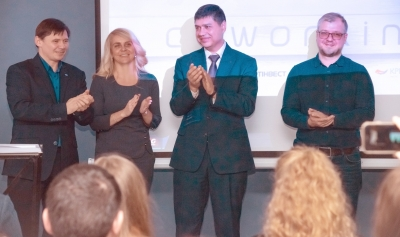
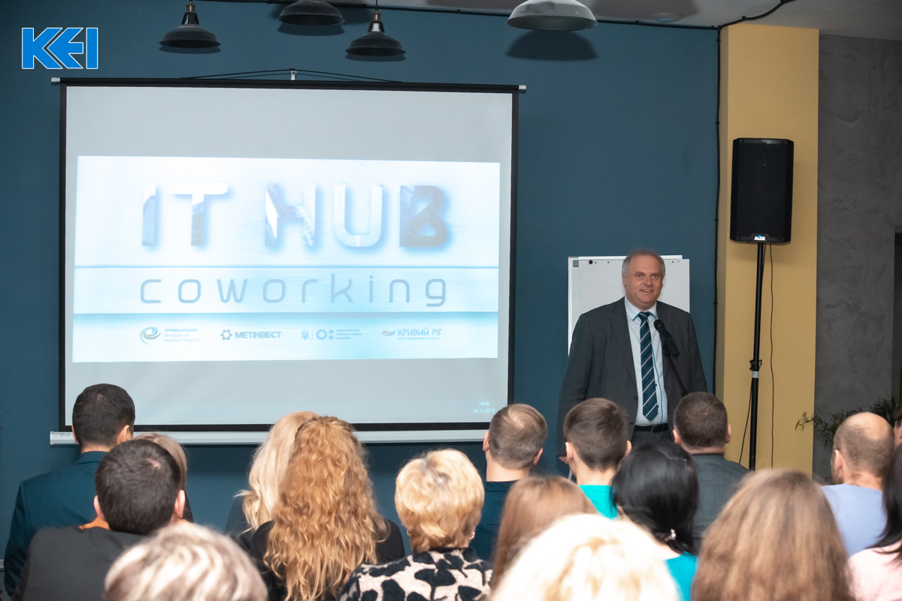
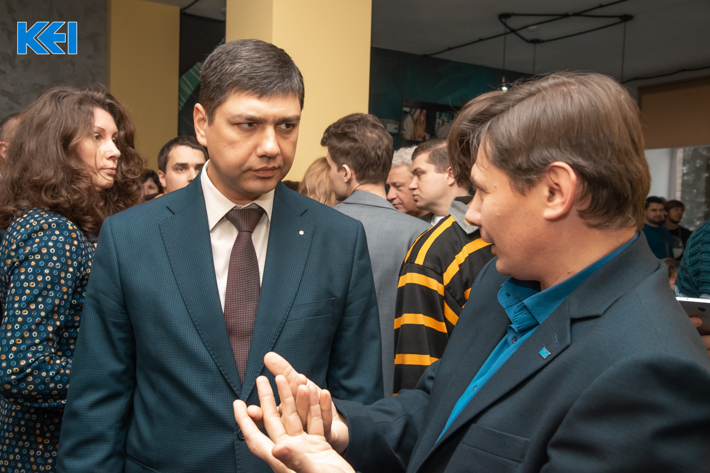

Про IT Hub
 Нова техніка, високошвидкісний інтернет, унікальний простір в центрі міста: в КЕІ відкрили IT-хаб і коворкінг
У КЕІ при фінансовій підтримці компанії "Метінвест" і ГО "Криворізька фундація майбутнього" відкрили перший IT-хаб і коворкінг. Багатофункціональні робочі кабінети знаходяться в окремому блоці Криворізького економічного інституту на площі Визволення, 2.
В Україні формат «гнучких офісів» для навчання і роботи, проведення зустрічей, конференцій і тренінгів існує вже кілька років. Для Кривого Рогу такий напрямок ново, тому ініціатори проекту - адміністрація Криворізького економічного інституту - ретельно контролювали хід робіт - від створення проектної документації до тестування технічних можливостей майданчика. Ключовим партнером на всіх етапах від передпідготовки до повноцінної роботи хаба і коворкінгу виступила компанія "Метінвест Діджитал" - лідер IT-ринку України, що спеціалізується на цифровий трансформації бізнесу, розвитку сервісів і навчальних програм для вищих навчальних закладів. Координатор проекту - громадська організація «Криворізький фонд майбутнього».
 «Коворкінг - це важливий інфраструктурний проект для Кривого Рогу, а ще це один з інструментів, який зможе вплинути на вибір студентів залишитися працювати в рідному місті, шукати рішення, спілкуватися і розвиватися. Такий формат роботи також зручний як для підприємців-початківців, так і для досвідчених бізнесменів. Тут відмінні технічні можливості і хороша атмосфера для того, щоб генерувати ідеї і створювати важливі проекти для міста і країни », - розповів директор Криворізького економічного інституту Андрій Шайкан.
Відвідувати IT-хаб і коворкінг можуть всі бажаючі. А для студентів КЕІ майданчик стане додатковим місцем для проведення інноваційних занять і зустрічей зі стейкхолдерами.
«Створення такого хаба в Кривому Розі - це важливий етап розвитку освітньої системи в місті. В українській освіті дуже важливу роль відіграють простору, де хочеться знаходиться, де хочеться спілкуватися і отримувати нові знання. Цей майданчик - приклад сучасних підходів до освіти для вузів всього регіону », - підкреслив генеральний директор директорату вищої освіти і освіти дорослих Міністерства освіти і науки України Олег Шаров.
Старт роботи закріпили підписанням Меморандуму про співпрацю між вузом, «Криворізьким фондом майбутнього», підприємством "Метінвест Діджитал", КЕІ та міським айті-спільнотою.
 «Підписаний сьогодні Меморандум про співробітництво ляже в основу спільних зусиль громадськості, бізнесу та освітніх інститутів Кривого Рогу для створення і розвитку соціально значущих ІТ-проектів. "Метінвест Діджитал" має значну експертизою в управлінні інноваційними проектами в бізнесі. Ми готові ділитися своїми знаннями, а також брати активну участь в розробці та впровадженні нових технологій на благо нашого міста і регіону », - прокоментував менеджер інформаційних технологій" Метінвест Діджитал "Ельдар Назіров.
В рамках облаштування хаба були капітально відремонтовані 600 м2 корисної площі, на якій тепер розташовуються технічно обладнані робочі кімнати і мобільні простору з можливістю розмістити від 7 до 100 чоловік одночасно. Для зручності відвідувачів працює кафетерій. Графік роботи: з 8:30 до 21:00. Номер телефону для довідок: +38 097 309 41 92.